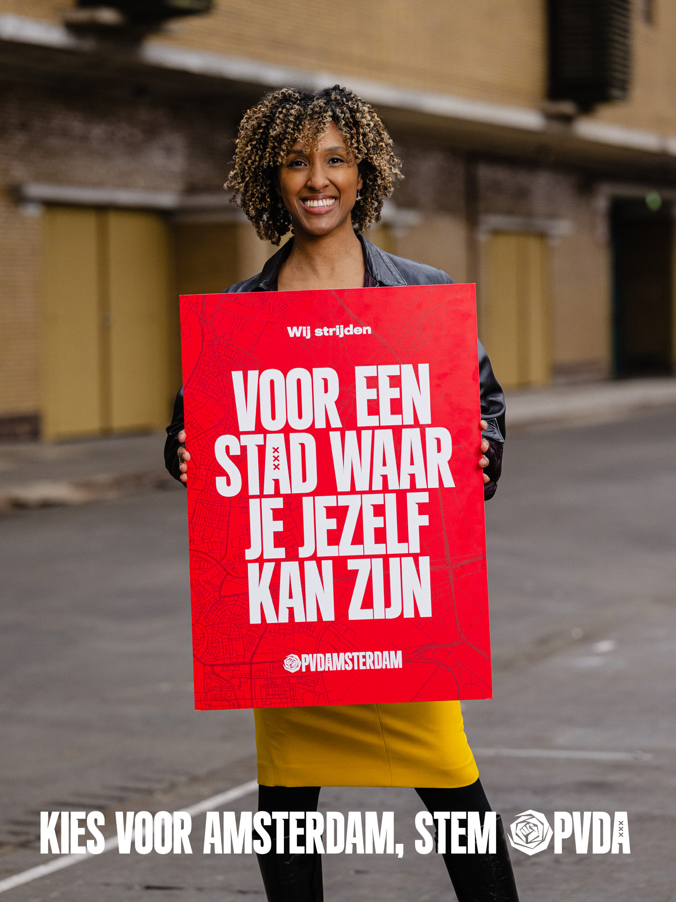

Haweya Abdillahi
Kandidaat Gemeenteraadslid
Lijst 1, plek 3 — PvdA Amsterdam
Scroll
Kandidaat Gemeenteraadslid
Lijst 1, plek 3 — PvdA Amsterdam

Alleen in deze stad kon mijn verhaal — en het verhaal van mijn gezin — ontstaan.
Als kind las mijn Somalische vader de Koran voor, en mijn Surinaamse oma de Bijbel. Toch ben ik bovenal Nederlander en Amsterdammer, omdat mijn werelden juist hier samen konden komen. Deze kracht wordt te vaak als tekortkoming of kwetsbaarheid gezien, maar is wat mij betreft precies wat Amsterdam zo bijzonder maakt.
De stad leerde me: je hoeft niet te kiezen wie je bent. Je mag het hier allemaal zijn. Nederlander met Somalische en Surinaamse wortels, die bij de politie werkt, moslim is, en van salsadansen houdt.
We hebben hier vaak een grote mond, maar altijd een groot hart. We zien naar elkaar om en laten niemand vallen. Het is een stad die niet verdeelt, maar verbindt. Die niet oordeelt, maar verwelkomt. Daar wil ik me voor blijven inzetten.
Ik zie dat de stad onder druk staat. Hij wordt harder, viezer, duurder en de afstand tussen mensen groeit. Creatieve rafelrandjes verdwijnen langzaam en worden vervangen door dure appartementen. En opeens staan er voor Amsterdamse zaakjes Instagramrijen.
En voor steeds meer Amsterdammers gaat het niet over jezelf ontdekken, maar over rondkomen. Over een betaalbare woning, veilig over straat kunnen.
Juist daarom stel ik me kandidaat, omdat ik wil dat Amsterdam die sociale stad van en voor iedereen blijft. Waar ik zelf ook het voordeel van heb gehad. Dat wens ik iedereen toe. Ik geloof dat we juist lokaal dat verschil kunnen maken. Daarom heb ik mij kandidaat gesteld.
Iedereen heeft tegenwoordig de wereld in zijn zak, en dat geldt dus ook voor onze kinderen. Ik ken geen ouder die niet worstelt met schermtijd. En ik ken te veel ouders die geen idee hebben hoe groot de risico's zijn. De overheid loopt hierin mijlenver achter. Ik zie in mijn werk bij de politie welke gevolgen dit heeft. Twaalfjarigen worden geronseld om vuurbommen te plaatsen of pakketjes rond te brengen. Dat moet en kan anders. Daarom ben ik enthousiast over de ouderbeweging Smartphonevrij Opgroeien. Maar de politiek zou veel meer moeten doen. Er moet meer aandacht komen voor de rol en consequenties van het gebruik van social media onder kinderen en jongeren.
De opkomst van AI biedt grote mogelijkheden voor de samenleving. Maar de ervaring uit het verleden leert ook dat digitale ontwikkelingen bestaande verschillen alleen maar uitvergroten. De overheid loopt daarin te vaak achter de feiten aan. We moeten zorgen dat digitalisering bestaande scheidslijnen, kansen en verschillen niet vergroot. We moeten sturen, beschermen, kansen creëren — en niet pas reageren als het al te laat is.
Er waait in Nederland een extreemrechtse wind. Amsterdam biedt daar moedig weerstand tegen, en dat moet zo blijven.
Want racisme en uitsluiting is — langzaam maar zeker — weer maatschappelijk geaccepteerd aan het raken. Met name door politici. Maar hier, in Amsterdam, zijn mensen zoals ik, met een bi-culturele achtergrond, de meerderheid. Heel veel inwoners met een migratieachtergrond worden buitengesloten, alleen omdat ze er anders uitzien.
Dat moeten we nooit accepteren. In Amsterdam laten we zien dat diversiteit geen bedreiging is, maar een kracht. Dat je samen verder komt, ook als je anders bent. En dat niet je afkomst maar je toekomst ertoe doet. Ik wil in de politiek laten zien en horen dat mensen met een bi-culturele achtergrond net zo veel Amsterdammer zijn als ieder ander. De kracht van Amsterdam is juist dat iedereen een Amsterdammer kan worden.
Ik kon op mijn 28ste als ambtenaar in m'n eentje nog een klein huisje in Amsterdam kopen. Dat is nu ondenkbaar. Vrienden van mij — een lerares en iemand uit de jeugdzorg — kunnen geen betaalbare woning vinden. Hun huur is hoger dan mijn hypotheek. Dat is absurd, en niet goed voor Amsterdam. Bovendien lijkt alles duurder te worden, wat niet houdbaar is. De stad moet betaalbaar blijven voor de mensen die haar draaiende houden en daar zorgen we voor door regelingen, ondersteuning, subsidies en goed werk.
Lange tijd ging het beter met de positie van vrouwen, maar ook die positie is niet meer vanzelfsprekend. Daarom wil ik extra aandacht voor de veiligheid van vrouwen op straat en online, blijven ze baas in eigen buik en gaan anderen niet over beslissingen over jouw lichaam, en pakken we de loonkloof aan. De gemeente heeft hierin een voorbeeldfunctie.
Op 18 maart kiezen we wie ermee mag doen in de stad.
Over wat voor een stad we worden.
Daar heb ik jou voor nodig.
Voor een stad die verbindt.
Voor een stad die kansen geeft.
Voor een stad die niemand laat vallen.
Stem Lijst 1, plek 3
Haweya Abdillahi